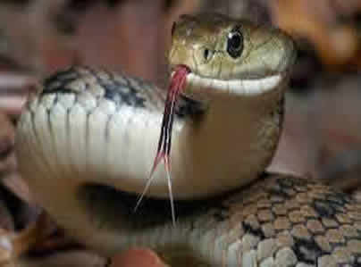
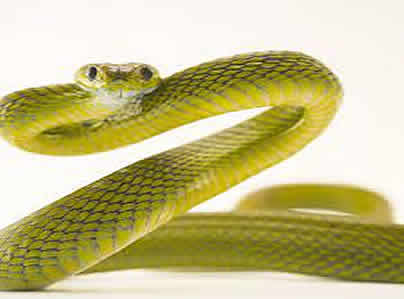
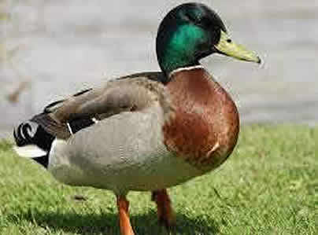
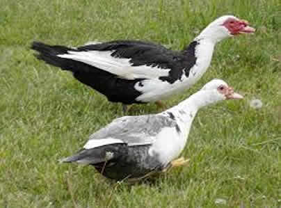
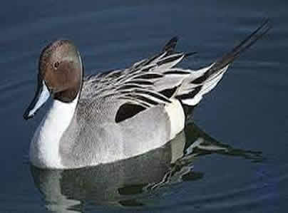

PIT BULL
bulldogs were originally bred to help butchers control livestock, although bulldogs most likely predate pit bills, with a history that can possibly be traced back to the 5th century in England and a breed called the Alaunt. By the 15th century, in addition to catching horses, cattle, and boars in legitimate (if dangerous) farming use, bulldogs were also used in the barbaric “sport” called bull-baiting, in which trained dogs would latch onto a tethered bull’s nose and not let go until the dog had pulled the bull to the ground or the bull had killed it.
DOBERMAN
bulldogs were originally bred to help butchers control livestock, although bulldogs most likely predate pit bills, with a history that can possibly be traced back to the 5th century in England and a breed called the Alaunt. By the 15th century, in addition to catching horses, cattle, and boars in legitimate (if dangerous) farming use, bulldogs were also used in the barbaric “sport” called bull-baiting, in which trained dogs would latch onto a tethered bull’s nose and not let go until the dog had pulled the bull to the ground or the bull had killed it.
WROTHWILER
bulldogs were originally bred to help butchers control livestock, although bulldogs most likely predate pit bills, with a history that can possibly be traced back to the 5th century in England and a breed called the Alaunt. By the 15th century, in addition to catching horses, cattle, and boars in legitimate (if dangerous) farming use, bulldogs were also used in the barbaric “sport” called bull-baiting, in which trained dogs would latch onto a tethered bull’s nose and not let go until the dog had pulled the bull to the ground or the bull had killed it.
CATS

KITTY
While 12,000 years ago might seem a bold estimate—nearly 3,000 before the date of the Cyprus tomb's cat—it actually is a perfectly logical one, since that is precisely when the first agricultural societies began to flourish in the Middle East's Fertile Crescent.
LEO
While 12,000 years ago might seem a bold estimate—nearly 3,000 before the date of the Cyprus tomb's cat—it actually is a perfectly logical one, since that is precisely when the first agricultural societies began to flourish in the Middle East's Fertile Crescent.

SIMBA
While 12,000 years ago might seem a bold estimate—nearly 3,000 before the date of the Cyprus tomb's cat—it actually is a perfectly logical one, since that is precisely when the first agricultural societies began to flourish in the Middle East's Fertile Crescent.
SNAKE

PYTHON
any of various species of highly venomous snakes, most of which expand the neck ribs to form a hood. While the hood is characteristic of cobras, not all of them are closely related. Cobras are found from southern Africa through southern Asia to islands of Southeast Asia.
VIPER
any of various species of highly venomous snakes, most of which expand the neck ribs to form a hood. While the hood is characteristic of cobras, not all of them are closely related. Cobras are found from southern Africa through southern Asia to islands of Southeast Asia.

COBRA
any of various species of highly venomous snakes, most of which expand the neck ribs to form a hood. While the hood is characteristic of cobras, not all of them are closely related. Cobras are found from southern Africa through southern Asia to islands of Southeast Asia.
DUCK

DABBLING DUCK
While 12,000 years ago might seem a bold estimate—nearly 3,000 before the date of the Cyprus tomb's cat—it actually is a perfectly logical one, since that is precisely when the first agricultural societies began to flourish in the Middle East's Fertile Crescent.

DRIVING DUCK
While 12,000 years ago might seem a bold estimate—nearly 3,000 before the date of the Cyprus tomb's cat—it actually is a perfectly logical one, since that is precisely when the first agricultural societies began to flourish in the Middle East's Fertile Crescent.
